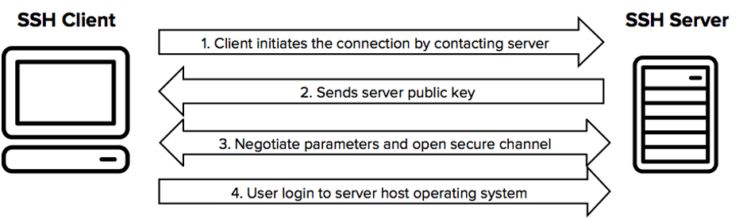

What is SSH?
The SSH protocol
The SSH protocol uses encryption to secure the connection between a client and a server. All user authentication, commands, output, and file transfers are encrypted to protect against attacks in the network.
History of the SSH protocol
The Secure Shell protocol was originally developed by Tatu Ylonen in 1995 in response to a hacking incident in the Finnish university network. The incident triggered Ylonen to study cryptography and develop a solution he could use himself for remote login over the Internet safely. His friends proposed additional features, and three months later, in July 1995, Ylonen published the first version as open source. It became OpenSSH. Later he took the protocol for standardization at the IETF and designed the SSH File Transfer Protocol (SFTP). He founded SSH Communications Security Corp in December 1995 to provide commercial support for the protocol. Ylonen still works on topics related to Secure Shell, particularly around key management, as well as broader cybersecurity topics.
Today, the protocol is used for managing more than half of world’s web servers and practically every Unix or Linux computer, on-premise and in the cloud. Information security specialists and system administrators use it to configure, manage, maintain, and operate most firewalls, routers, switches, and servers in the millions of mission-critical networks and environments of our digital world. It is also embedded inside many file transfer and systems management solutions.
The new protocol replaced several legacy tools and protocols, including telnet, ftp, FTP/S, rlogin, rsh, and rcp.
Practically every Unix and Linux system includes the ssh command. This command is used to start the SSH client program that enables secure connection to the SSH server on a remote machine. The ssh command is used from logging into the remote machine, transferring files between the two machines, and for executing commands on the remote machine.
Using the Linux client
Linux typically uses the OpenSSH client. The ssh command to log into a remote machine is very simple. To log in to a remote computer called sample.ssh.com, type the following command at a shell prompt:
ssh sample.ssh.com
If this is the first time you use ssh to connect to this remote machine, you will see a message like:
The authenticity of host 'sample.ssh.com' cannot be established. DSA key fingerprint is 04:48:30:31:b0:f3:5a:9b:01:9d:b3:a7:38:e2:b1:0c. Are you sure you want to continue connecting (yes/no)? Type yes to continue. This will add the server to your list of known hosts ( ~/.ssh/known_hosts ) as seen in the following message: Warning: Permanently added 'sample.ssh.com' (DSA) to the list of known hosts.
Each server has a host key, and the above question related to verifying and saving the host key, so that next time you connect to the server, it can verify that it actually is the same server. Once the server connection has been established, the user is authenticated. Typically, it asks for a password. For some servers, you may be required to type in a one-time password generated by a special hardware token. Once authentication has been accepted, you will be at the shell prompt for the remote machine.